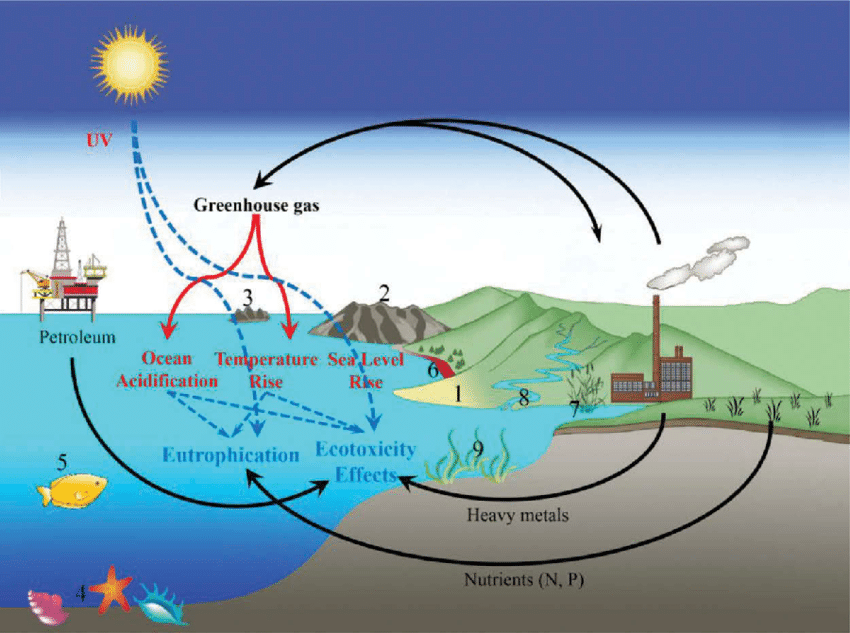
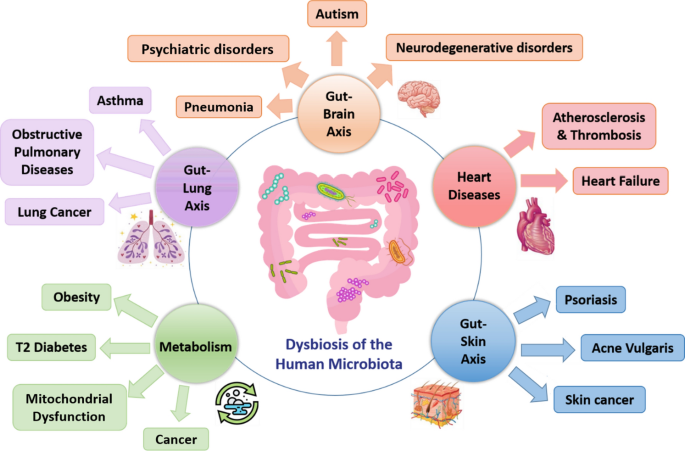
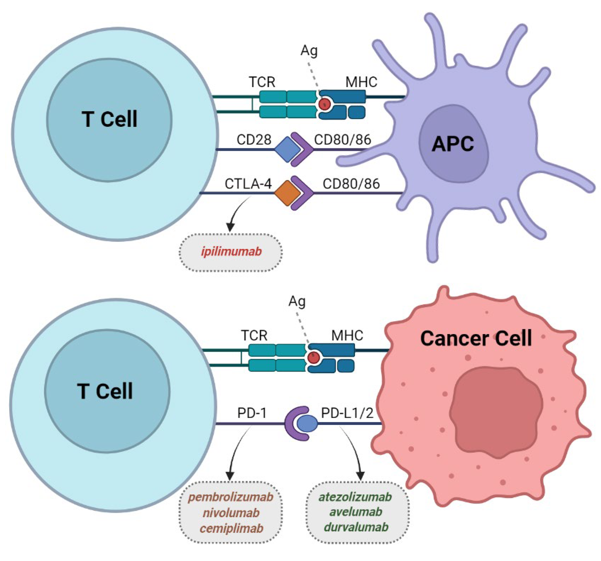

Developing a Sustainable Energy Framework for Rural Communities.
This research was conducted by a group of engineers and
environmental scientists from the Massachusetts Institute of
Technology (MIT) and was published in the journal Renewable Energy.
The study focused on developing a sustainable energy framework for
rural communities in a specific region. The researchers analyzed the
energy demand, availability of renewable resources, and economic
feasibility to propose an integrated solution combining solar power,
microgrids, and energy storage technologies.
The Impact of Climate Change on Coastal Ecosystems

This study was conducted by a team of researchers from the
University of California, Santa Cruz, and was published in the
journal Nature. The researchers examined the effects of rising sea
levels, ocean acidification, and increased temperatures on coastal
ecosystems. They utilized data from satellite imagery, field
surveys, and computer modeling to assess the vulnerability of these
ecosystems and propose adaptive strategies.
Understanding the Effects of Artificial Intelligence on Job Market
Dynamics
This research was conducted by economists from Harvard University
and published in the Journal of Labor Economics. The study examined
the impact of artificial intelligence (AI) technologies on labor
markets, job displacement, and skill requirements. It employed
econometric models and analyzed large-scale employment data to
assess the consequences of AI adoption in various industries.
Investigating the Role of Gut Microbiota in Human Health and Disease

This study was conducted by microbiologists from the University of
California, San Diego and published in the journal Cell. The
research aimed to understand the complex interactions between gut
microbiota and human health. Through microbial sequencing and
controlled experiments, the researchers identified specific
microbial compositions associated with diseases such as inflammatory
bowel disease and explored potential therapeutic interventions.
Advances in Cancer Immunotherapy: Targeting Immune Checkpoints

This study was conducted by oncologists and immunologists from
several research institutions and pharmaceutical companies, and
published in the journal Nature Reviews Cancer. The researchers
reviewed recent developments in cancer immunotherapy, focusing on
immune checkpoint inhibitors. They discussed the mechanism of
action, clinical efficacy, and challenges associated with these
novel treatment approaches.